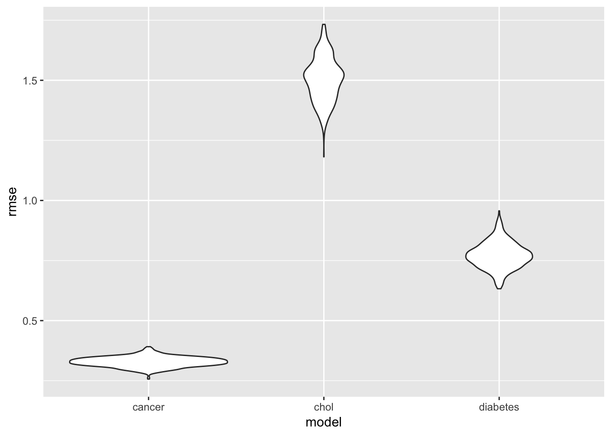

In this section, we will explore some linear models predicting health outcomes from commonly used health practices.
For each of the models we will show, we first fit a model on disease prevalences with common health practices as predictors, and eliminated predictors until all of the predictors in the model were significant.
For a detailed description of all of the health practice variables for which data was collected, see the data dictionary link on the home page.
For the prevalence of cancer (excluding skin cancer) for adults 18 and older, the following health practices were predictors in a multiple linear regression:
| Health Practice | Effect on Cancer Prevalence | Coefficient Estimate | P-Value |
|---|---|---|---|
| Core Practices for Men | Positive | 0.0120 | 0.012 |
| Dental Visits | Negative | -0.0330 | 1.06e-14 |
| Mammogram Usage | Negative | -0.0360 | 2.31e-06 |
| Routine Checkups | Negative | -0.0095 | 0.0295 |
| Colon Screening | Positive | 0.1070 | < 2e-16 |
For the prevalence of high cholesterol in adults over 18 who have been screened in the last 5 years, the following health practices were predictors in a multiple linear regression:
| Health Practice | Effect on High Cholesterol Prevalence | Coefficient Estimate | P-Value |
|---|---|---|---|
| Dental Visits | Negative | -0.0640 | 0.004 |
| Lack of Physical Activity | Positive | 0.1710 | 9.18e-07 |
| Routine Checkups | Positive | 0.0401 | 0.049 |
| Colon Screening | Positive | 0.0610 | 0.037 |
For the prevalence of diabetes in adults 18 and older, the following health practices were predictors in a multiple linear regression:
| Health Practice | Effect on Diabetes Prevalence | Coefficient Estimate | P-Value |
|---|---|---|---|
| Core Practices for Women | Negative | -0.063 | 6.19e-11 |
| Dental Visits | Negative | -0.135 | < 2e-16 |
| Lack of Physical Activity | Positive | 0.193 | < 2e-16 |
| Mammogram Usage | Positive | 0.085 | 1.44e-08 |
| Routine Checkups | Positive | 0.076 | 1.33e-08 |
| Cholesterol Screening | Negative | -0.074 | 4e-04 |
Now, we want to assess the predictive ability of these models to see if they are at all useful.
So, we use cross validation: we split the data into training and testing sets, run the models on the training sets and assess their accuracy on the testing sets.
Once we do this, we show the RMSE graphically.

From this, we can see that the health practice variables from the dataset have the most predictive power for prevalence of cancer, and the least for high cholesterol. Intuitively, this makes sense for a couple of reasons. First, cholesterol levels are highly related to genetics, and this dataset has no variables collected on genetics. Also, many of the practices measured by this dataset are cancer screening practices.